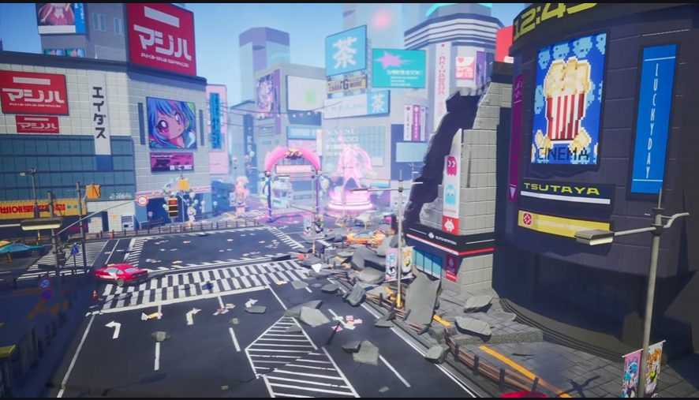

← 대표 프로젝트01 / TEAM · 2024.08—12
미마미
잡몹과 애니메이션 수를 줄여 튜토리얼을 완성했습니다.
16명이 만든 보스전 중심 액션 게임입니다.
프로그래머로 참여했고, 개발 후반에는 PD도 맡았습니다.
- 팀 규모
- 16명
- 역할
- PD · 프로그래머
- 개발 기간
- 15주

▶미마미 최종 시연 ↗01 / DECISION
잡몹과 애니메이션 수를 줄였습니다.
상황
PD의 업무 부담과 아트 리소스 제작 지연으로 튜토리얼 구현이 어려운 상황이었습니다.
조율
AD·애니메이터와 협의해 잡몹을 1종으로 줄이고, 애니메이션 종류·개수와 제작 일정을 조정했습니다.
완성
플레이 가능한 최소 버전을 먼저 만들고 부족한 부분을 보완했습니다. 튜토리얼을 완성해 최종 시연 빌드에 반영했습니다.
02 / TEAM OPERATION
TODO는 매일 확인하고, 회의는 주 2회 진행했습니다.
DAILY개인별 TODO 확인
팀원이 작성한 TODO를 매일 확인하고 개인별 진행 상황을 관리했습니다.
TWICE A WEEK디스코드 정기 회의
디스코드에서 주 2회 모여 진행 상황을 공유하고 작업을 나눴습니다.
BUILD & QA반복 빌드와 재검증
빌드를 지속적으로 공유하고, 버그 수정 후 기획자와 테스트를 진행했습니다.
03 / PLAYABLE RESULT
중간·최종 시연 영상
튜토리얼을 포함한 최종 빌드를 완성했습니다. 종료 후에는 포스트모템으로 협업 과정을 돌아봤습니다.
04 / DEVELOPMENT
직접 개발한 기능
액션 FSM · 타격감튜토리얼 · 스테이지 · 스포너보스 2페이즈 · 버그 수정
기여 범위와 작업 기록 ＋
개발 10주차부터 실질적인 PD 업무를 수행했고, 13주차에 공식 인수했습니다. 팀 PM이 작성한 일정 양식을 바탕으로 개인별 TODO 확인, 회의 진행, 범위 조율과 개발을 맡았습니다.
- 12주차 · 업무 일지
- 튜토리얼·스테이지·액터 스포너 개발 완료
- 13주차 · 업무 일지
- PD 변경, 개인별 일정 관리 및 TODO 작성 운영
- 14주차 · 업무 일지
- 회의·작업 분배, TODO 확인, 버그 QA 및 반복 빌드
- 3주차 · 크리틱 회의록
- 회의록 작성 · 교수 피드백을 그래픽·기획·전체 질문으로 정리
- 종료 후 · 포스트모템
- 팀 회고용 포스트모템 설문(구글 폼) 작성
기록은 개인 업무 일지·회의록·설문의 관련 항목을 요약했습니다. 제작 범위·회의 주기는 본인 회고를 반영했습니다.